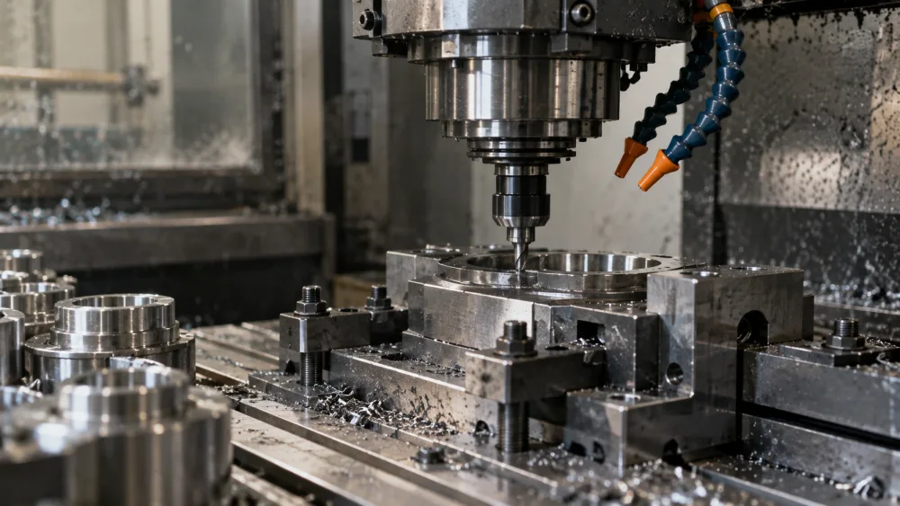

Automate
We identify repetitive, manual work and automate the mechanical parts so your team can focus on higher-value tasks.
Learn more →Software consulting for real businesses
Agentic Possible helps Detroit-area businesses automate repetitive work, connect existing systems, and build useful software around the way their teams actually operate.
Built in Detroit. Working wherever you do.
What we do
We find high-leverage opportunities for automation, build practical software, and help your team adopt it. The goal isn’t to add AI everywhere — it’s to remove friction and give your business more leverage.
We identify repetitive, manual work and automate the mechanical parts so your team can focus on higher-value tasks.
Learn more →We integrate the tools, data, documents, and systems your business already uses so information flows smoothly.
Learn more →We design and build custom software tools — including AI-powered systems — around your specific workflows.
Learn more →Industries
We focus on small and mid-sized businesses, especially teams where valuable people spend too much time moving information between documents, email, spreadsheets, and software.
Client intake, document processing, reconciliation workflows, research, and recurring communications.
Explore possibilities →
RFQ processing, quote generation, supplier communication, quality documents, and operational workflows.
Explore possibilities →Intake, document review, matter summaries, internal knowledge search, and drafting workflows.
Explore possibilities →RFPs, submittals, project documents, estimating support, reporting, and coordination.
Explore possibilities →Our process
We learn your business, team, and workflows to identify real opportunities.
We quickly build and test solutions with real data and real users.
We implement the solution, integrate with your systems, and train your team.
We measure impact and continue to iterate as your needs evolve.
Let’s talk
Tell us about your business and what’s slowing you down. We’ll start with a short conversation to explore where better software or automation could help.
Get in touch →“Practical software.
Real outcomes.
Built for how your
business actually works.”